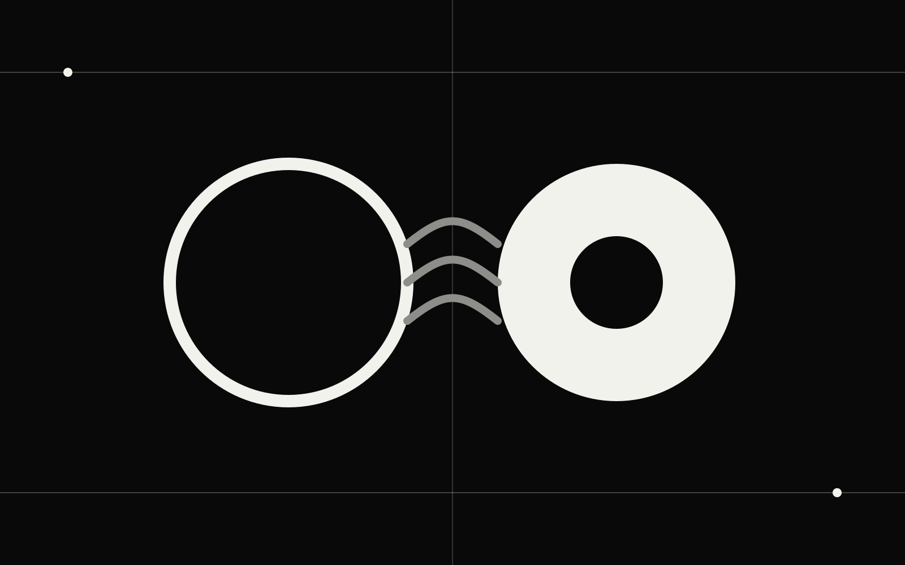
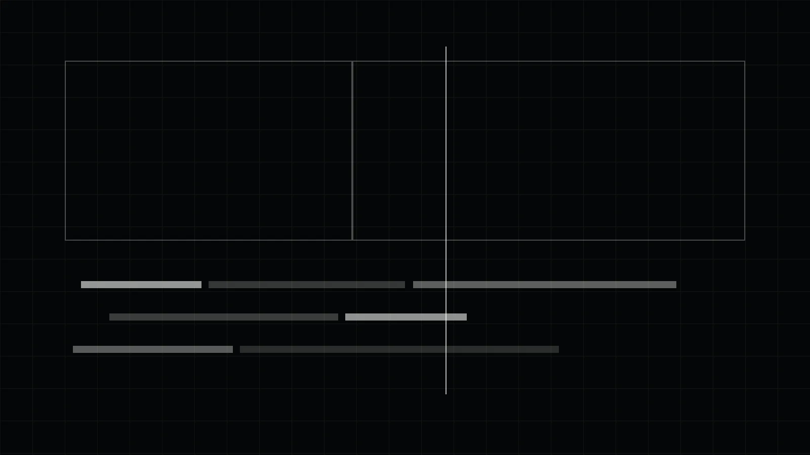
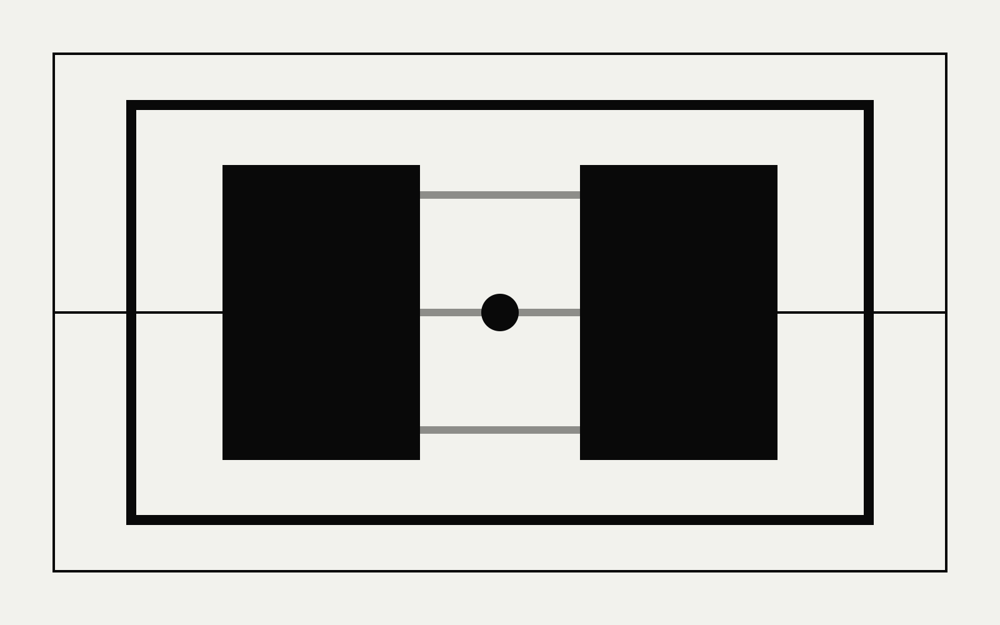
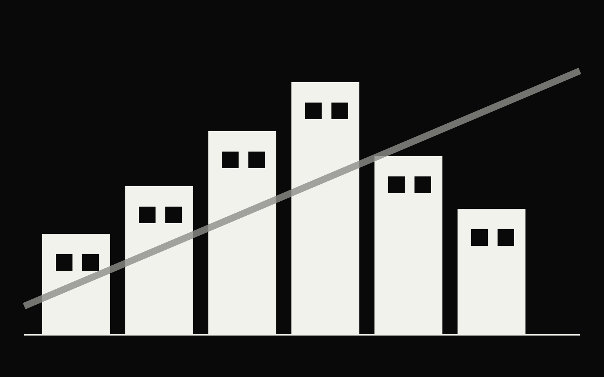
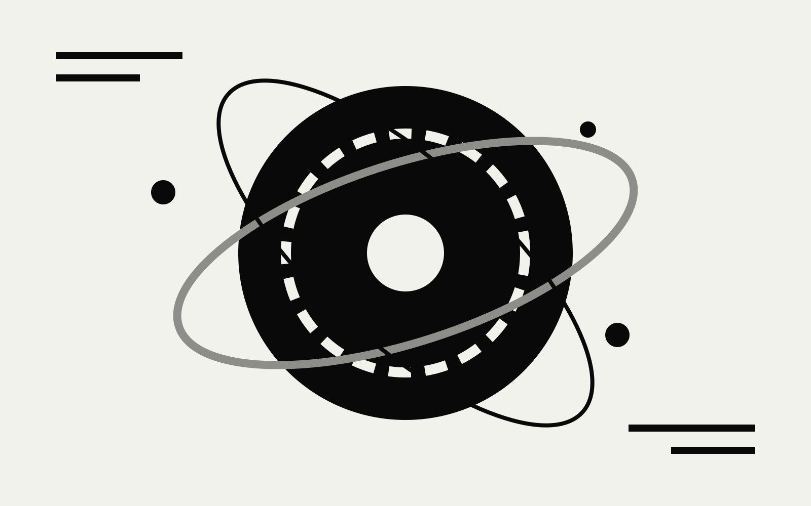

Video Post
Select a project
Choose a record from the archive index to view its confirmed summary.

Portfolio / Selected Practice
Multimedia Designer & Senior Video Editor
I shape cinematic stories through post-production, motion graphics, visual effects, and practical shooting support—extended by AI-assisted visual workflows where they add real creative value.

Selected Work
Four selected moving-image projects, organised around editorial craft. Each available record presents its confirmed role, context, and production details.
Video Post
Choose a record from the archive index to view its confirmed summary.

Interview Film · Undated
Video Editing · Color Grading
An interview film featuring video editing and color grading.

Micro Film · Undated
Video Editing · Color Grading
A micro film featuring video editing and color grading.

Promotional Film · Undated
Video Editing · Color Grading
A promotional film featuring video editing and color grading.

Motion Graphics · Undated
Motion Graphics
A motion graphics project.
Capabilities
A practical production skill set centred on moving-image storytelling, supported by visual design and selective AI workflows.
Editorial structure, pacing, colour, motion, visual effects, sound-aware finishing, and delivery across long-form and social formats.
Practical support for shoots, from equipment setup through camera, lighting, and audio operation.
Image and moving-image exploration used as a supporting layer for visual development, prototyping, and repeatable creative workflows.
Process
Each stage creates a useful production artefact, keeping creative decisions visible and reviewable.
Clarify audience, message, format, constraints, and the intended emotional read.
Output: brief & reference routeShape the edit, styleframes, visual language, or AI-assisted exploration required by the project.
Output: assembly & visual directionTest pacing, clarity, motion, colour, and feedback against the agreed objective.
Output: review versionsComplete quality control, format versions, and the final delivery package.
Output: approved mastersExperience
Roles spanning videography, editing, senior post-production, and multimedia design.
About
I am Chris “Criz” Leung, a multimedia designer and senior video editor. My practice is grounded in hands-on post-production: shaping structure, rhythm, motion, colour, and visual effects so each piece communicates with purpose.
My production background also covers camera, lighting, and audio support. Alongside that core craft, I explore AI-assisted image and video workflows as practical tools for visual development and repeatable creative systems.
Contact
For post-production, multimedia design, production support, or a focused AI-assisted visual workflow, send an email with the project context and intended delivery.
crizleung21@gmail.com